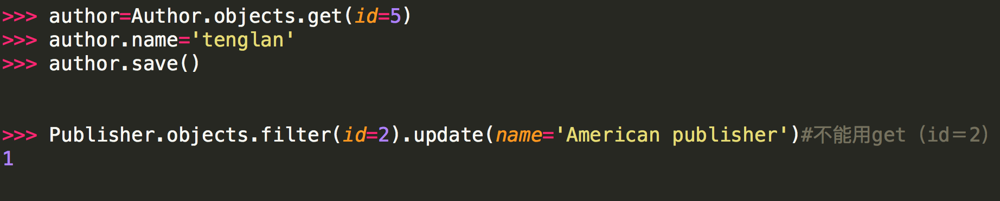

Django～1
一 什么是web框架？
框架，即framework，特指为解决一个开放性问题而设计的具有一定约束性的支撑结构，使用框架可以帮你快速开发特定的系统，简单地说，就是你用别人搭建好的舞台来做表演。
对于所有的Web应用，本质上其实就是一个socket服务端，用户的浏览器其实就是一个socket客户端。


import socket def handle_request(client): buf = client.recv(1024) client.send("HTTP/1.1 200 OK\r\n\r\n".encode("utf8")) client.send("<h1 style='color:red'>Hello, yuan</h1>".encode("utf8")) def main(): sock = socket.socket(socket.AF_INET, socket.SOCK_STREAM) sock.bind(('localhost',8001)) sock.listen(5) while True: connection, address = sock.accept() handle_request(connection) connection.close() if __name__ == '__main__': main()
最简单的Web应用就是先把HTML用文件保存好，用一个现成的HTTP服务器软件，接收用户请求，从文件中读取HTML，返回。
如果要动态生成HTML，就需要把上述步骤自己来实现。不过，接受HTTP请求、解析HTTP请求、发送HTTP响应都是苦力活，如果我们自己来写这些底层代码，还没开始写动态HTML呢，就得花个把月去读HTTP规范。
正确的做法是底层代码由专门的服务器软件实现，我们用Python专注于生成HTML文档。因为我们不希望接触到TCP连接、HTTP原始请求和响应格式，所以，需要一个统一的接口，让我们专心用Python编写Web业务。
这个接口就是WSGI：Web Server Gateway Interface。
-----------------------------Do a web framework ourselves---------------------------
step 1:
from wsgiref.simple_server import make_server def application(environ, start_response): start_response('200 OK', [('Content-Type', 'text/html')]) return [b'<h1>Hello, web!</h1>'] httpd = make_server('', 8080, application) print('Serving HTTP on port 8000...') # 开始监听HTTP请求: httpd.serve_forever()
注意：
整个application()函数本身没有涉及到任何解析HTTP的部分，也就是说，底层代码不需要我们自己编写， 我们只负责在更高层次上考虑如何响应请求就可以了。 application()函数必须由WSGI服务器来调用。有很多符合WSGI规范的服务器，我们可以挑选一个来用。 Python内置了一个WSGI服务器，这个模块叫wsgiref application()函数就是符合WSGI标准的一个HTTP处理函数，它接收两个参数： //environ：一个包含所有HTTP请求信息的dict对象； //start_response：一个发送HTTP响应的函数。 在application()函数中，调用： start_response('200 OK', [('Content-Type', 'text/html')]) 就发送了HTTP响应的Header，注意Header只能发送一次，也就是只能调用一次start_response()函数。 start_response()函数接收两个参数，一个是HTTP响应码，一个是一组list表示的HTTP Header，每 个Header用一个包含两个str的tuple表示。 通常情况下，都应该把Content-Type头发送给浏览器。其他很多常用的HTTP Header也应该发送。 然后，函数的返回值b'<h1>Hello, web!</h1>'将作为HTTP响应的Body发送给浏览器。 有了WSGI，我们关心的就是如何从environ这个dict对象拿到HTTP请求信息，然后构造HTML， 通过start_response()发送Header，最后返回Body。
step 2
print(environ['PATH_INFO']) path=environ['PATH_INFO'] start_response('200 OK', [('Content-Type', 'text/html')]) f1=open("index1.html","rb") data1=f1.read() f2=open("index2.html","rb") data2=f2.read() if path=="/yuan": return [data1] elif path=="/alex": return [data2] else: return ["<h1>404</h1>".encode('utf8')]
step3
from wsgiref.simple_server import make_server def f1(): f1=open("index1.html","rb") data1=f1.read() return [data1] def f2(): f2=open("index2.html","rb") data2=f2.read() return [data2] def application(environ, start_response): print(environ['PATH_INFO']) path=environ['PATH_INFO'] start_response('200 OK', [('Content-Type', 'text/html')]) if path=="/yuan": return f1() elif path=="/alex": return f2() else: return ["<h1>404</h1>".encode("utf8")] httpd = make_server('', 8502, application) print('Serving HTTP on port 8084...') # 开始监听HTTP请求: httpd.serve_forever()
step4
from wsgiref.simple_server import make_server def f1(req): print(req) print(req["QUERY_STRING"]) f1=open("index1.html","rb") data1=f1.read() return [data1] def f2(req): f2=open("index2.html","rb") data2=f2.read() return [data2] import time def f3(req): #模版以及数据库 f3=open("index3.html","rb") data3=f3.read() times=time.strftime("%Y-%m-%d %X", time.localtime()) data3=str(data3,"utf8").replace("!time!",str(times)) return [data3.encode("utf8")] def routers(): urlpatterns = ( ('/yuan',f1), ('/alex',f2), ("/cur_time",f3) ) return urlpatterns def application(environ, start_response): print(environ['PATH_INFO']) path=environ['PATH_INFO'] start_response('200 OK', [('Content-Type', 'text/html')]) urlpatterns = routers() func = None for item in urlpatterns: if item[0] == path: func = item[1] break if func: return func(environ) else: return ["<h1>404</h1>".encode("utf8")] httpd = make_server('', 8518, application) print('Serving HTTP on port 8084...') # 开始监听HTTP请求: httpd.serve_forever()
伙计们，不知不觉我们自己已经写出一个web框架啦！
二 MVC和MTV模式
著名的MVC模式：所谓MVC就是把web应用分为模型(M),控制器(C),视图(V)三层；他们之间以一种插件似的，松耦合的方式连接在一起。
模型负责业务对象与数据库的对象(ORM),视图负责与用户的交互(页面)，控制器(C)接受用户的输入调用模型和视图完成用户的请求。

Django的MTV模式本质上与MVC模式没有什么差别，也是各组件之间为了保持松耦合关系，只是定义上有些许不同，Django的MTV分别代表：
Model(模型)：负责业务对象与数据库的对象(ORM)
Template(模版)：负责如何把页面展示给用户
View(视图)：负责业务逻辑，并在适当的时候调用Model和Template
此外，Django还有一个url分发器，它的作用是将一个个URL的页面请求分发给不同的view处理，view再调用相应的Model和Template

三 django的流程和命令行工具
django实现流程
django #安装： pip3 install django 添加环境变量 #1 创建project django-admin startproject mysite ---mysite ---settings.py ---url.py ---wsgi.py ---- manage.py(启动文件) #2 创建APP python mannage.py startapp app01 #3 settings配置 TEMPLATES STATICFILES_DIRS=( os.path.join(BASE_DIR,"statics"), ) STATIC_URL = '/static/' # 我们只能用 STATIC_URL，但STATIC_URL会按着你的STATICFILES_DIRS去找#4 根据需求设计代码 url.py view.py #5 使用模版 render(req,"index.html") #6 启动项目 python manage.py runserver 127.0.0.1:8090 #7 连接数据库，操作数据 model.py
django的命令行工具
django-admin.py 是Django的一个用于管理任务的命令行工具，manage.py是对django－admin.py的简单包装,每一个Django Project里都会有一个mannage.py。
<1> 创建一个django工程 : django-admin.py startproject mysite
当前目录下会生成mysite的工程，目录结构如下：

- manage.py ----- Django项目里面的工具，通过它可以调用django shell和数据库等。
- settings.py ---- 包含了项目的默认设置，包括数据库信息，调试标志以及其他一些工作的变量。
- urls.py ----- 负责把URL模式映射到应用程序。
<2>在mysite目录下创建blog应用: python manage.py startapp blog

<3>启动django项目：python manage.py runserver 8080
这样我们的django就启动起来了！当我们访问：http://127.0.0.1:8080/时就可以看到：

<4>生成同步数据库的脚本：python manage.py makemigrations
同步数据库: python manage.py migrate
注意：在开发过程中，数据库同步误操作之后，难免会遇到后面不能同步成功的情况，解决这个问题的一个简单粗暴方法是把migrations目录下
的脚本（除__init__.py之外）全部删掉，再把数据库删掉之后创建一个新的数据库，数据库同步操作再重新做一遍。
<5>当我们访问http://127.0.0.1:8080/admin/时，会出现：
所以我们需要为进入这个项目的后台创建超级管理员：python manage.py createsuperuser，设置好用户名和密码后便可登录啦！
<6>清空数据库：python manage.py flush
<7>查询某个命令的详细信息： django-admin.py help startapp
admin 是Django 自带的一个后台数据库管理系统。
<8>启动交互界面 ：python manage.py shell
这个命令和直接运行 python 进入 shell 的区别是：你可以在这个 shell 里面调用当前项目的 models.py 中的 API，对于操作数据，还有一些小测试非常方便。
<9> 终端上输入python manage.py 可以看到详细的列表，在忘记子名称的时候特别有用。
实例练习1－提交数据并展示
<!DOCTYPE html> <html lang="en"> <head> <meta charset="UTF-8"> <title>Title</title> </head> <body> <h1>创建个人信息</h1> <form action="/userInfor/" method="post"> <p>姓名<input type="text" name="username"></p> <p>性别<input type="text" name="sex"></p> <p>邮箱<input type="text" name="email"></p> <p><input type="submit" value="submit"></p> </form> <hr> <h1>信息展示</h1> <table border="1"> <tr> <td>姓名</td> <td>性别</td> <td>邮箱</td> </tr> {% for i in info_list %} <tr> <td>{{ i.username }}</td> <td>{{ i.sex }}</td> <td>{{ i.email }}</td> </tr> {% endfor %} </table> </body> </html> -----------------------url.py--------------------------------------- url(r'^userInfor/', views.userInfor) -----------------------views.py-------------------------------------- info_list=[] def userInfor(req): if req.method=="POST": username=req.POST.get("username",None) sex=req.POST.get("sex",None) email=req.POST.get("email",None) info={"username":username,"sex":sex,"email":email} info_list.append(info) return render(req,"userInfor.html",{"info_list":info_list})
实例练习2－提交数据并展示(数据库)
<!DOCTYPE html> <html lang="en"> <head> <meta charset="UTF-8"> <title>Title</title> </head> <body> <h1>创建个人信息</h1> <form action="/userInfor/" method="post"> <p>姓名<input type="text" name="username"></p> <p>性别<input type="text" name="sex"></p> <p>邮箱<input type="text" name="email"></p> <p><input type="submit" value="submit"></p> </form> <hr> <h1>信息展示</h1> <table border="1"> <tr> <td>姓名</td> <td>性别</td> <td>邮箱</td> </tr> {% for i in info_list %} <tr> <td>{{ i.username }}</td> <td>{{ i.sex }}</td> <td>{{ i.email }}</td> </tr> {% endfor %} </table> </body> </html> ----------------------------------------------models.py from django.db import models # Create your models here. class UserInfor(models.Model): username=models.CharField(max_length=64) sex=models.CharField(max_length=64) email=models.CharField(max_length=64) ----------------------------------------------views.py from django.shortcuts import render from app01 import models # Create your views here. def userInfor(req): if req.method=="POST": u=req.POST.get("username",None) s=req.POST.get("sex",None) e=req.POST.get("email",None) #---------表中插入数据方式一 # info={"username":u,"sex":e,"email":e} # models.UserInfor.objects.create(**info) #---------表中插入数据方式二 models.UserInfor.objects.create( username=u, sex=s, email=e ) info_list=models.UserInfor.objects.all() return render(req,"userInfor.html",{"info_list":info_list}) return render(req,"userInfor.html")
四 Django的配置文件(settings)
静态文件设置:
一、概述： #静态文件交由Web服务器处理，Django本身不处理静态文件。简单的处理逻辑如下(以nginx为例)： # URI请求-----> 按照Web服务器里面的配置规则先处理，以nginx为例，主要求配置在nginx. #conf里的location |---------->如果是静态文件，则由nginx直接处理 |---------->如果不是则交由Django处理，Django根据urls.py里面的规则进行匹配 # 以上是部署到Web服务器后的处理方式，为了便于开发，Django提供了在开发环境的对静态文件的处理机制，方法是这样： #1、在INSTALLED_APPS里面加入'django.contrib.staticfiles', #2、在urls.py里面加入 if settings.DEBUG: urlpatterns += patterns('', url(r'^media/(?P<path>.*)$', 'django.views.static.serve', {'document_root': settings.MEDIA_ROOT }), url(r'^static/(?P<path>.*)$', 'django.views.static.serve',{'document_root':settings.STATIC_ROOT}), ) # 3、这样就可以在开发阶段直接使用静态文件了。 二、MEDIA_ROOT和MEDIA_URL #而静态文件的处理又包括STATIC和MEDIA两类，这往往容易混淆，在Django里面是这样定义的： #MEDIA:指用户上传的文件，比如在Model里面的FileFIeld，ImageField上传的文件。如果你定义 #MEDIA_ROOT=c:\temp\media，那么File=models.FileField(upload_to="abc/")＃，上传的文件就会被保存到c:\temp\media\abc #eg： class blog(models.Model): Title=models.charField(max_length=64) Photo=models.ImageField(upload_to="photo") # 上传的图片就上传到c:\temp\media\photo，而在模板中要显示该文件，则在这样写 #在settings里面设置的MEDIA_ROOT必须是本地路径的绝对路径，一般是这样写: BASE_DIR= os.path.abspath(os.path.dirname(__file__)) MEDIA_ROOT=os.path.join(BASE_DIR,'media/').replace('\\','/') #MEDIA_URL是指从浏览器访问时的地址前缀，举个例子： MEDIA_ROOT=c:\temp\media\photo MEDIA_URL="/data/" #在开发阶段,media的处理由django处理： # 访问http://localhost/data/abc/a.png就是访问c:\temp\media\photo\abc\a.png # 在模板里面这样写<img src="{{MEDIA_URL}}abc/a.png"> # 在部署阶段最大的不同在于你必须让web服务器来处理media文件，因此你必须在web服务器中配置， # 以便能让web服务器能访问media文件 # 以nginx为例，可以在nginx.conf里面这样： location ~/media/{ root/temp/ break; } # 具体可以参考如何在nginx部署django的资料。 三、STATIC_ROOT和STATIC_URL、 STATIC主要指的是如css,js,images这样文件，在settings里面可以配置STATIC_ROOT和STATIC_URL, 配置方式与MEDIA_ROOT是一样的，但是要注意 #STATIC文件一般保存在以下位置： #1、STATIC_ROOT：在settings里面设置，一般用来放一些公共的js,css,images等。 #2、app的static文件夹，在每个app所在文夹均可以建立一个static文件夹，然后当运行collectstatic时， # Django会遍历INSTALL_APPS里面所有app的static文件夹，将里面所有的文件复制到STATIC_ROOT。因此， # 如果你要建立可复用的app，那么你要将该app所需要的静态文件放在static文件夹中。 # 也就是说一个项目引用了很多app，那么这个项目所需要的css,images等静态文件是分散在各个app的static文件的，比 # 较典型的是admin应用。当你要发布时，需要将这些分散的static文件收集到一个地方就是STATIC_ROOT。 #3、STATIC文件还可以配置STATICFILES_DIRS，指定额外的静态文件存储位置。 # STATIC_URL的含义与MEDIA_URL类似。 # ---------------------------------------------------------------------------- #注意1: #为了后端的更改不会影响前端的引入，避免造成前端大量修改 STATIC_URL = '/static/' #引用名 STATICFILES_DIRS = ( os.path.join(BASE_DIR,"statics") #实际名 ,即实际文件夹的名字 ) #django对引用名和实际名进行映射,引用时,只能按照引用名来,不能按实际名去找 #<script src="/statics/jquery-3.1.1.js"></script> #------error－－－－－不能直接用，必须用STATIC_URL = '/static/': #<script src="/static/jquery-3.1.1.js"></script> #注意2(statics文件夹写在不同的app下,静态文件的调用): STATIC_URL = '/static/' STATICFILES_DIRS=( ('hello',os.path.join(BASE_DIR,"app01","statics")) , ) #<script src="/static/hello/jquery-1.8.2.min.js"></script> #注意3: STATIC_URL = '/static/' {% load staticfiles %} # <script src={% static "jquery-1.8.2.min.js" %}></script>
其它重要参数设置：

APPEND_SLASH Default: True When set to True, if the request URL does not match any of the patterns in the URLconf and it
doesn’t end in a slash, an HTTP redirect is issued to the same URL with a slash appended. Note
that the redirect may cause any data submitted in a POST request to be lost.
五 Django URL (路由系统)
URL配置(URLconf)就像Django 所支撑网站的目录。它的本质是URL模式以及要为该URL模式调用的视图函数之间的映射表；你就是以这种方式告诉Django，对于这个URL调用这段代码，对于那个URL调用那段代码。
1 2 3 | urlpatterns = [ url(正则表达式, views视图函数，参数，别名),] |
参数说明：
- 一个正则表达式字符串
- 一个可调用对象，通常为一个视图函数或一个指定视图函数路径的字符串
- 可选的要传递给视图函数的默认参数（字典形式）
- 一个可选的name参数
5.1 Here’s a sample URLconf:
from django.conf.urls import url from django.contrib import admin from app01 import views urlpatterns = [ url(r'^articles/2003/$', views.special_case_2003), #url(r'^articles/[0-9]{4}/$', views.year_archive), url(r'^articles/([0-9]{4})/$', views.year_archive), #no_named group url(r'^articles/([0-9]{4})/([0-9]{2})/$', views.month_archive), url(r'^articles/([0-9]{4})/([0-9]{2})/([0-9]+)/$', views.article_detail), ]
Note:
#1 There’s no need to add a leading slash, because every URL has that. For # example, it’s ^articles, not ^/articles. #2 A request to /articles/2005/03/ would match the third entry in the list. # Django would call the function views.month_archive(request, '2005', '03'). #3 /articles/2005/3/ would not match any URL patterns #4 /articles/2003/ would match the first pattern in the list, not the second one #5 /articles/2003/03/03/ would match the final pattern. Django would call the # functionviews.article_detail(request, '2003', '03', '03').
5.2 Named groups
The above example used simple, non-named regular-expression groups (via parenthesis) to capture bits of the URL and pass them as positional arguments to a view. In more advanced usage, it’s possible to use named regular-expression groups to capture URL bits and pass them as keyword arguments to a view.
In Python regular expressions, the syntax for named regular-expression groups is (?P<name>pattern), where name is the name of the group and pattern is some pattern to match.
Here’s the above example URLconf, rewritten to use named groups:
import re ret=re.search('(?P<id>\d{3})/(?P<name>\w{3})','weeew34ttt123/ooo') print(ret.group()) print(ret.group('id')) print(ret.group('name'))
from django.conf.urls import url from . import views urlpatterns = [ url(r'^articles/2003/$', views.special_case_2003), url(r'^articles/(?P<year>[0-9]{4})/$', views.year_archive), url(r'^articles/(?P<year>[0-9]{4})/(?P<month>[0-9]{2})/$', views.month_archive), url(r'^articles/(?P<year>[0-9]{4})/(?P<month>[0-9]{2})/(?P<day>[0-9]{2})/$', views.article_detail), ]
This accomplishes exactly the same thing as the previous example, with one subtle difference: The captured values are passed to view functions as keyword arguments rather than positional arguments.
5.3 Passing extra options to view functions
URLconfs have a hook that lets you pass extra arguments to your view functions, as a Python dictionary.
The django.conf.urls.url() function can take an optional third argument which should be a dictionary of extra keyword arguments to pass to the view function.
For example:
from django.conf.urls import url from . import views urlpatterns = [ url(r'^blog/(?P<year>[0-9]{4})/$', views.year_archive, {'foo': 'bar'}), ]
In this example, for a request to /blog/2005/, Django will call views.year_archive(request, year='2005',foo='bar').
This technique is used in the syndication framework to pass metadata and options to views.
Dealing with conflicts
It’s possible to have a URL pattern which captures named keyword arguments, and also passes arguments with the same names in its dictionary of extra arguments. When this happens, the arguments in the dictionary will be used instead of the arguments captured in the URL.
5.4 name param
urlpatterns = [ url(r'^index',views.index,name='bieming'), url(r'^admin/', admin.site.urls), # url(r'^articles/2003/$', views.special_case_2003), url(r'^articles/([0-9]{4})/$', views.year_archive), # url(r'^articles/([0-9]{4})/([0-9]{2})/$', views.month_archive), # url(r'^articles/([0-9]{4})/([0-9]{2})/([0-9]+)/$', views.article_detail), ] ################### def index(req): if req.method=='POST': username=req.POST.get('username') password=req.POST.get('password') if username=='alex' and password=='123': return HttpResponse("登陆成功") return render(req,'index.html') ##################### <!DOCTYPE html> <html lang="en"> <head> <meta charset="UTF-8"> <title>Title</title> </head> <body> {# <form action="/index/" method="post">#} <form action="{% url 'bieming' %}" method="post"> 用户名:<input type="text" name="username"> 密码:<input type="password" name="password"> <input type="submit" value="submit"> </form> </body> </html> #######################
5.5 Including other URLconfs
#At any point, your urlpatterns can “include” other URLconf modules. This #essentially “roots” a set of URLs below other ones. #For example, here’s an excerpt of the URLconf for the Django website itself. #It includes a number of other URLconfs: from django.conf.urls import include, url urlpatterns = [ url(r'^admin/', admin.site.urls), url(r'^blog/', include('blog.urls')), ]
六 Django Views（视图函数）
http请求中产生两个核心对象：
http请求：HttpRequest对象
http响应：HttpResponse对象
所在位置：django.http
之前我们用到的参数request就是HttpRequest 检测方法：isinstance(request,HttpRequest)
1 HttpRequest对象的属性和方法：
# path： 请求页面的全路径，不包括域名 # # method： 请求中使用的HTTP方法的字符串表示。全大写表示。例如 # # if req.method=="GET": # # do_something() # # elseif req.method=="POST": # # do_something_else() # # GET: 包含所有HTTP GET参数的类字典对象 # # POST： 包含所有HTTP POST参数的类字典对象 # # 服务器收到空的POST请求的情况也是可能发生的，也就是说，表单form通过 # HTTP POST方法提交请求，但是表单中可能没有数据，因此不能使用 # if req.POST来判断是否使用了HTTP POST 方法；应该使用 if req.method=="POST" # # # # COOKIES: 包含所有cookies的标准Python字典对象；keys和values都是字符串。 # # FILES： 包含所有上传文件的类字典对象；FILES中的每一个Key都是<input type="file" name="" />标签中 name属性的值，FILES中的每一个value同时也是一个标准的python字典对象，包含下面三个Keys： # # filename： 上传文件名，用字符串表示 # content_type: 上传文件的Content Type # content： 上传文件的原始内容 # # # user： 是一个django.contrib.auth.models.User对象，代表当前登陆的用户。如果访问用户当前 # 没有登陆，user将被初始化为django.contrib.auth.models.AnonymousUser的实例。你 # 可以通过user的is_authenticated()方法来辨别用户是否登陆： # if req.user.is_authenticated();只有激活Django中的AuthenticationMiddleware # 时该属性才可用 # # session： 唯一可读写的属性，代表当前会话的字典对象；自己有激活Django中的session支持时该属性才可用。 #方法 get_full_path(), 比如：http://127.0.0.1:8000/index33/?name=123 ,req.get_full_path()得到的结果就是/index33/?name=123 req.path:/index33
注意一个常用方法：request.POST.getlist('')
2 HttpResponse对象：
对于HttpRequest对象来说，是由django自动创建的，但是，HttpResponse对象就必须我们自己创建。每个view请求处理方法必须返回一个HttpResponse对象。
HttpResponse类在django.http.HttpResponse
在HttpResponse对象上扩展的常用方法：
1 2 3 | 页面渲染： render()（推荐）<br> render_to_response(),页面跳转： redirect("路径")locals()： 可以直接将函数中所有的变量传给模板 |
补充：
-----------------------------------url.py url(r"login", views.login), url(r"yuan_back", views.yuan_back), -----------------------------------views.py def login(req): if req.method=="POST": if 1: # return redirect("/yuan_back/") name="yuanhao" return render(req,"my backend.html",locals()) return render(req,"login.html",locals()) def yuan_back(req): name="苑昊" return render(req,"my backend.html",locals()) -----------------------------------login.html <form action="/login/" method="post"> <p>姓名<input type="text" name="username"></p> <p>性别<input type="text" name="sex"></p> <p>邮箱<input type="text" name="email"></p> <p><input type="submit" value="submit"></p> </form> -----------------------------------my backend.html <h1>用户{{ name }}你好</h1> #总结: render和redirect的区别: # 1 if render的页面需要模板语言渲染,需要的将数据库的数据加载到html,那么所有的这一部分 # 除了写在yuan_back的视图函数中,必须还要写在login中,代码重复,没有解耦. # 2 the most important: url没有跳转到/yuan_back/,而是还在/login/,所以当刷新后 # 又得重新登录.
七 Template基础
模板系统的介绍
你可能已经注意到我们在例子视图中返回文本的方式有点特别。 也就是说，HTML被直接硬编码在 Python代码之中。
def current_datetime(request): now = datetime.datetime.now() html = "<html><body>It is now %s.</body></html>" % now return HttpResponse(html)
尽管这种技术便于解释视图是如何工作的，但直接将HTML硬编码到你的视图里却并不是一个好主意。 让我们来看一下为什么：
-
对页面设计进行的任何改变都必须对 Python 代码进行相应的修改。 站点设计的修改往往比底层 Python 代码的修改要频繁得多，因此如果可以在不进行 Python 代码修改的情况下变更设计，那将会方便得多。
-
Python 代码编写和 HTML 设计是两项不同的工作，大多数专业的网站开发环境都将他们分配给不同的人员（甚至不同部门）来完成。 设计者和HTML/CSS的编码人员不应该被要求去编辑Python的代码来完成他们的工作。
-
程序员编写 Python代码和设计人员制作模板两项工作同时进行的效率是最高的，远胜于让一个人等待另一个人完成对某个既包含 Python又包含 HTML 的文件的编辑工作。
基于这些原因，将页面的设计和Python的代码分离开会更干净简洁更容易维护。 我们可以使用 Django的 模板系统 (Template System)来实现这种模式，这就是本章要具体讨论的问题。
------------------------------------------------------------------模板语法------------------------------------------------------------------
一模版的组成
组成：HTML代码＋逻辑控制代码
二 逻辑控制代码的组成
1 变量（使用双大括号来引用变量）：
1 | 语法格式： {{var_name}} |
－－－－－－Template和Context对象
>>> python manange.py shell (进入该django项目的环境) >>> from django.template import Context, Template >>> t = Template('My name is {{ name }}.') >>> c = Context({'name': 'Stephane'}) >>> t.render(c) 'My name is Stephane.' # 同一模板，多个上下文，一旦有了模板对象，你就可以通过它渲染多个context，无论何时我们都可以 # 像这样使用同一模板源渲染多个context，只进行 一次模板创建然后多次调用render()方法渲染会 # 更为高效： # Low for name in ('John', 'Julie', 'Pat'): t = Template('Hello, {{ name }}') print t.render(Context({'name': name})) # Good t = Template('Hello, {{ name }}') for name in ('John', 'Julie', 'Pat'): print t.render(Context({'name': name}))
Django 模板解析非常快捷。 大部分的解析工作都是在后台通过对简短正则表达式一次性调用来完成。 这和基于 XML 的模板引擎形成鲜明对比，那些引擎承担了 XML 解析器的开销，且往往比 Django 模板渲染引擎要慢上几个数量级。
from django.shortcuts import render,HttpResponse from django.template.loader import get_template #记得导入 # Create your views here. import datetime from django.template import Template,Context # def current_time(req): #原始的视图函数 # now=datetime.datetime.now() # html="<html><body>现在时刻：<h1>%s.</h1></body></html>" %now # return HttpResponse(html) # def current_time(req): #django模板修改的视图函数 # now=datetime.datetime.now() # t=Template('<html><body>现在时刻是:<h1 style="color:red">{{current_date}}</h1></body></html>') #t=get_template('current_datetime.html') # c=Context({'current_date':now}) # html=t.render(c) # return HttpResponse(html) #另一种写法(推荐) def current_time(req): now=datetime.datetime.now() return render(req, 'current_datetime.html', {'current_date':now})
－－－－－－深度变量的查找（万能的句点号）
在到目前为止的例子中，我们通过 context 传递的简单参数值主要是字符串，然而，模板系统能够非常简洁地处理更加复杂的数据结构，例如list、dictionary和自定义的对象。
在 Django 模板中遍历复杂数据结构的关键是句点字符 (.)。
#最好是用几个例子来说明一下。 # 首先，句点可用于访问列表索引，例如： >>> from django.template import Template, Context >>> t = Template('Item 2 is {{ items.2 }}.') >>> c = Context({'items': ['apples', 'bananas', 'carrots']}) >>> t.render(c) 'Item 2 is carrots.' #假设你要向模板传递一个 Python 字典。 要通过字典键访问该字典的值，可使用一个句点： >>> from django.template import Template, Context >>> person = {'name': 'Sally', 'age': '43'} >>> t = Template('{{ person.name }} is {{ person.age }} years old.') >>> c = Context({'person': person}) >>> t.render(c) 'Sally is 43 years old.' #同样，也可以通过句点来访问对象的属性。 比方说， Python 的 datetime.date 对象有 #year 、 month 和 day 几个属性，你同样可以在模板中使用句点来访问这些属性： >>> from django.template import Template, Context >>> import datetime >>> d = datetime.date(1993, 5, 2) >>> d.year 1993 >>> d.month 5 >>> d.day 2 >>> t = Template('The month is {{ date.month }} and the year is {{ date.year }}.') >>> c = Context({'date': d}) >>> t.render(c) 'The month is 5 and the year is 1993.' # 这个例子使用了一个自定义的类，演示了通过实例变量加一点(dots)来访问它的属性，这个方法适 # 用于任意的对象。 >>> from django.template import Template, Context >>> class Person(object): ... def __init__(self, first_name, last_name): ... self.first_name, self.last_name = first_name, last_name >>> t = Template('Hello, {{ person.first_name }} {{ person.last_name }}.') >>> c = Context({'person': Person('John', 'Smith')}) >>> t.render(c) 'Hello, John Smith.' # 点语法也可以用来引用对象的方法。 例如，每个 Python 字符串都有 upper() 和 isdigit() # 方法，你在模板中可以使用同样的句点语法来调用它们： >>> from django.template import Template, Context >>> t = Template('{{ var }} -- {{ var.upper }} -- {{ var.isdigit }}') >>> t.render(Context({'var': 'hello'})) 'hello -- HELLO -- False' >>> t.render(Context({'var': '123'})) '123 -- 123 -- True' # 注意这里调用方法时并* 没有* 使用圆括号 而且也无法给该方法传递参数；你只能调用不需参数的 # 方法。
－－－－－－变量的过滤器(filter)的使用
1 | 语法格式： {{obj|filter:param}} |
# 1 add ： 给变量加上相应的值 # # 2 addslashes : 给变量中的引号前加上斜线 # # 3 capfirst : 首字母大写 # # 4 cut ： 从字符串中移除指定的字符 # # 5 date ： 格式化日期字符串 # # 6 default ： 如果值是False,就替换成设置的默认值，否则就是用本来的值 # # 7 default_if_none: 如果值是None，就替换成设置的默认值，否则就使用本来的值 #实例: #value1="aBcDe" {{ value1|upper }}<br> #value2=5 {{ value2|add:3 }}<br> #value3='he llo wo r ld' {{ value3|cut:' ' }}<br> #import datetime #value4=datetime.datetime.now() {{ value4|date:'Y-m-d' }}<br> #value5=[] {{ value5|default:'空的' }}<br> #value6='<a href="#">跳转</a>' {{ value6 }} {% autoescape off %} {{ value6 }} {% endautoescape %} {{ value6|safe }}<br> {{ value6|striptags }} #value7='1234' {{ value7|filesizeformat }}<br> {{ value7|first }}<br> {{ value7|length }}<br> {{ value7|slice:":-1" }}<br> #value8='http://www.baidu.com/?a=1&b=3' {{ value8|urlencode }}<br> value9='hello I am yuan'
2 标签(tag)的使用（使用大括号和百分比的组合来表示使用tag）
1 | {% tags %} |
－－－－－－{% if %} 的使用
{% if %}标签计算一个变量值，如果是“true”，即它存在、不为空并且不是false的boolean值,系统则会显示{% if %}和{% endif %}间的所有内容
{% if num >= 100 and 8 %}
{% if num > 200 %}
<p>num大于200</p>
{% else %}
<p>num大于100小于200</p>
{% endif %}
{% elif num < 100%}
<p>num小于100</p>
{% else %}
<p>num等于100</p>
{% endif %}
{% if %} 标签接受and，or或者not来测试多个变量值或者否定一个给定的变量
{% if %} 标签不允许同一标签里同时出现and和or，否则逻辑容易产生歧义，例如下面的标签是不合法的：
{% if obj1 and obj2 or obj3 %}
－－－－－－{% for %}的使用
{% for %}标签允许你按顺序遍历一个序列中的各个元素,每次循环模板系统都会渲染{% for %}和{% endfor %}之间的所有内容
<ul> {% for obj in list %} <li>{{ obj.name }}</li> {% endfor %} </ul> #在标签里添加reversed来反序循环列表： {% for obj in list reversed %} ... {% endfor %} #{% for %}标签可以嵌套： {% for country in countries %} <h1>{{ country.name }}</h1> <ul> {% for city in country.city_list %} <li>{{ city }}</li> {% endfor %} </ul> {% endfor %} #系统不支持中断循环，系统也不支持continue语句，{% for %}标签内置了一个forloop模板变量， #这个变量含有一些属性可以提供给你一些关于循环的信息 1，forloop.counter表示循环的次数，它从1开始计数，第一次循环设为1: {% for item in todo_list %} <p>{{ forloop.counter }}: {{ item }}</p> {% endfor %} 2，forloop.counter0 类似于forloop.counter，但它是从0开始计数，第一次循环设为0 3，forloop.revcounter 4，forloop.revcounter0 5，forloop.first当第一次循环时值为True，在特别情况下很有用： {% for object in objects %} {% if forloop.first %}<li class="first">{% else %}<li>{% endif %} {{ object }} </li> {% endfor %} # 富有魔力的forloop变量只能在循环中得到，当模板解析器到达{% endfor %}时forloop就消失了 # 如果你的模板context已经包含一个叫forloop的变量，Django会用{% for %}标签替代它 # Django会在for标签的块中覆盖你定义的forloop变量的值 # 在其他非循环的地方，你的forloop变量仍然可用 #{% empty %} {{li }} {% for i in li %} <li>{{ forloop.counter0 }}----{{ i }}</li> {% empty %} <li>this is empty!</li> {% endfor %} # [11, 22, 33, 44, 55] # 0----11 # 1----22 # 2----33 # 3----44 # 4----55
－－－－－－{%csrf_token%}：csrf_token标签
用于生成csrf_token的标签，用于防治跨站攻击验证。注意如果你在view的index里用的是render_to_response方法，不会生效
其实，这里是会生成一个input标签，和其他表单标签一起提交给后台的。
－－－－－－{% url %}: 引用路由配置的地址
<form action="{% url "bieming"%}" > <input type="text"> <input type="submit"value="提交"> {%csrf_token%} </form>
－－－－－－{% with %}:用更简单的变量名替代复杂的变量名
1 | {% with total=fhjsaldfhjsdfhlasdfhljsdal %} {{ total }} {% endwith %} |
－－－－－－{% verbatim %}: 禁止render
1 2 3 | {% verbatim %} {{ hello }}{% endverbatim %} |
－－－－－－{% load %}: 加载标签库
3 自定义filter和simple_tag
－－－－－－a、在app中创建templatetags模块(必须的)
－－－－－－b、创建任意 .py 文件，如：my_tags.py
from django import template from django.utils.safestring import mark_safe register = template.Library() #register的名字是固定的,不可改变 @register.filter def filter_multi(v1,v2): return v1 * v2 @register.simple_tag def simple_tag_multi(v1,v2): return v1 * v2 @register.simple_tag def my_input(id,arg): result = "<input type='text' id='%s' class='%s' />" %(id,arg,) return mark_safe(result)
－－－－－－c、在使用自定义simple_tag和filter的html文件中导入之前创建的 my_tags.py ：{% load my_tags %}
－－－－－－d、使用simple_tag和filter（如何调用）
-------------------------------.html {% load xxx %} #首行 # num=12 {{ num|filter_multi:2 }} #24 {{ num|filter_multi:"[22,333,4444]" }} {% simple_tag_multi 2 5 %} 参数不限,但不能放在if for语句中 {% simple_tag_multi num 5 %}
－－－－－－e、在settings中的INSTALLED_APPS配置当前app，不然django无法找到自定义的simple_tag.
注意：
filter可以用在if等语句后，simple_tag不可以
{% if num|filter_multi:30 > 100 %}
{{ num|filter_multi:30 }}
{% endif %}
4 extend模板继承
－－－－－－include 模板标签
在讲解了模板加载机制之后，我们再介绍一个利用该机制的内建模板标签： {% include %} 。该标签允许在（模板中）包含其它的模板的内容。 标签的参数是所要包含的模板名称，可以是一个变量，也可以是用单/双引号硬编码的字符串。 每当在多个模板中出现相同的代码时，就应该考虑是否要使用 {% include %} 来减少重复。
－－－－－－extend(继承)模板标签
到目前为止，我们的模板范例都只是些零星的 HTML 片段，但在实际应用中，你将用 Django 模板系统来创建整个 HTML 页面。 这就带来一个常见的 Web 开发问题： 在整个网站中，如何减少共用页面区域（比如站点导航）所引起的重复和冗余代码？
解决该问题的传统做法是使用 服务器端的 includes ，你可以在 HTML 页面中使用该指令将一个网页嵌入到另一个中。 事实上， Django 通过刚才讲述的 {% include %} 支持了这种方法。 但是用 Django 解决此类问题的首选方法是使用更加优雅的策略—— 模板继承 。
本质上来说，模板继承就是先构造一个基础框架模板，而后在其子模板中对它所包含站点公用部分和定义块进行重载。
让我们通过修改 current_datetime.html 文件，为 current_datetime 创建一个更加完整的模板来体会一下这种做法：
<!DOCTYPE HTML PUBLIC "-//W3C//DTD HTML 4.01//EN"> <html lang="en"> <head> <title>The current time</title> </head> <body> <h1>My helpful timestamp site</h1> <p>It is now {{ current_date }}.</p> <hr> <p>Thanks for visiting my site.</p> </body> </html>
这看起来很棒，但如果我们要为 hours_ahead 视图创建另一个模板会发生什么事情呢？
<!DOCTYPE HTML PUBLIC "-//W3C//DTD HTML 4.01//EN"> <html lang="en"> <head> <title>Future time</title> </head> <body> <h1>My helpful timestamp site</h1> <p>In {{ hour_offset }} hour(s), it will be {{ next_time }}.</p> <hr> <p>Thanks for visiting my site.</p> </body> </html>
很明显，我们刚才重复了大量的 HTML 代码。 想象一下，如果有一个更典型的网站，它有导航条、样式表，可能还有一些 JavaScript 代码，事情必将以向每个模板填充各种冗余的 HTML 而告终。
解决这个问题的服务器端 include 方案是找出两个模板中的共同部分，将其保存为不同的模板片段，然后在每个模板中进行 include。 也许你会把模板头部的一些代码保存为 header.html 文件：
<!DOCTYPE HTML PUBLIC "-//W3C//DTD HTML 4.01//EN"> <html lang="en"> <head>
你可能会把底部保存到文件 footer.html :
<hr>
<p>Thanks for visiting my site.</p>
</body>
</html>
对基于 include 的策略，头部和底部的包含很简单。 麻烦的是中间部分。 在此范例中，每个页面都有一个<h1>My helpful timestamp site</h1> 标题，但是这个标题不能放在 header.html 中，因为每个页面的 <title> 是不同的。 如果我们将 <h1> 包含在头部，我们就不得不包含 <title> ，但这样又不允许在每个页面对它进行定制。 何去何从呢？
Django 的模板继承系统解决了这些问题。 你可以将其视为服务器端 include 的逆向思维版本。 你可以对那些不同 的代码段进行定义，而不是 共同 代码段。
第一步是定义 基础模板,该框架之后将由子模板所继承。 以下是我们目前所讲述范例的基础模板：
<!DOCTYPE HTML PUBLIC "-//W3C//DTD HTML 4.01//EN"> <html lang="en"> <head> <title>{% block title %}{% endblock %}</title> </head> <body> <h1>My helpful timestamp site</h1> {% block content %}{% endblock %} {% block footer %} <hr> <p>Thanks for visiting my site.</p> {% endblock %} </body> </html>
这个叫做 base.html 的模板定义了一个简单的 HTML 框架文档，我们将在本站点的所有页面中使用。 子模板的作用就是重载、添加或保留那些块的内容。 （如果你一直按顺序学习到这里，保存这个文件到你的template目录下，命名为 base.html .）
我们使用模板标签： {% block %} 。 所有的 {% block %} 标签告诉模板引擎，子模板可以重载这些部分。 每个{% block %}标签所要做的是告诉模板引擎，该模板下的这一块内容将有可能被子模板覆盖。
现在我们已经有了一个基本模板，我们可以修改 current_datetime.html 模板来 使用它：
{% extends "base.html" %}
{% block title %}The current time{% endblock %}
{% block content %}
<p>It is now {{ current_date }}.</p>
{% endblock %}
再为 hours_ahead 视图创建一个模板，看起来是这样的：
{% extends "base.html" %}
{% block title %}Future time{% endblock %}
{% block content %}
<p>In {{ hour_offset }} hour(s), it will be {{ next_time }}.</p>
{% endblock %}
看起来很漂亮是不是？ 每个模板只包含对自己而言 独一无二 的代码。 无需多余的部分。 如果想进行站点级的设计修改，仅需修改 base.html ，所有其它模板会立即反映出所作修改。
以下是其工作方式：
在加载 current_datetime.html 模板时，模板引擎发现了 {% extends %} 标签， 注意到该模板是一个子模板。 模板引擎立即装载其父模板，即本例中的 base.html 。此时，模板引擎注意到 base.html 中的三个 {% block %} 标签，并用子模板的内容替换这些 block 。因此，引擎将会使用我们在 { block title %} 中定义的标题，对 {% block content %} 也是如此。 所以，网页标题一块将由{% block title %}替换，同样地，网页的内容一块将由 {% block content %}替换。
注意由于子模板并没有定义 footer 块，模板系统将使用在父模板中定义的值。 父模板 {% block %} 标签中的内容总是被当作一条退路。继承并不会影响到模板的上下文。 换句话说，任何处在继承树上的模板都可以访问到你传到模板中的每一个模板变量。你可以根据需要使用任意多的继承次数。 使用继承的一种常见方式是下面的三层法：
<1> 创建 base.html 模板，在其中定义站点的主要外观感受。 这些都是不常修改甚至从不修改的部分。
<2> 为网站的每个区域创建 base_SECTION.html 模板(例如, base_photos.html 和 base_forum.html )。这些模板对base.html 进行拓展，
并包含区域特定的风格与设计。
<3> 为每种类型的页面创建独立的模板，例如论坛页面或者图片库。 这些模板拓展相应的区域模板。
这个方法可最大限度地重用代码，并使得向公共区域（如区域级的导航）添加内容成为一件轻松的工作。
以下是使用模板继承的一些诀窍：
<1>如果在模板中使用 {% extends %} ，必须保证其为模板中的第一个模板标记。 否则，模板继承将不起作用。
<2>一般来说，基础模板中的 {% block %} 标签越多越好。 记住，子模板不必定义父模板中所有的代码块，因此
你可以用合理的缺省值对一些代码块进行填充，然后只对子模板所需的代码块进行（重）定义。 俗话说，钩子越
多越好。
<3>如果发觉自己在多个模板之间拷贝代码，你应该考虑将该代码段放置到父模板的某个 {% block %} 中。
如果你需要访问父模板中的块的内容，使用 {{ block.super }}这个标签吧，这一个魔法变量将会表现出父模
板中的内容。 如果只想在上级代码块基础上添加内容，而不是全部重载，该变量就显得非常有用了。
<4>不允许在同一个模板中定义多个同名的 {% block %} 。 存在这样的限制是因为block 标签的工作方式是双向的。
也就是说，block 标签不仅挖了一个要填的坑，也定义了在父模板中这个坑所填充的内容。如果模板中出现了两个
相同名称的 {% block %} 标签，父模板将无从得知要使用哪个块的内容。
八 Models
数据库的配置
1 django默认支持sqlite，mysql, oracle,postgresql数据库。
<1> sqlite
django默认使用sqlite的数据库，默认自带sqlite的数据库驱动 , 引擎名称：django.db.backends.sqlite3
<2> mysql
引擎名称：django.db.backends.mysql
2 mysql驱动程序
- MySQLdb(mysql python)
- mysqlclient
- MySQL
- PyMySQL(纯python的mysql驱动程序)
3 在django的项目中会默认使用sqlite数据库，在settings里有如下设置：

如果我们想要更改数据库，需要修改如下：
DATABASES = { 'default': { 'ENGINE': 'django.db.backends.mysql', 'NAME': 'books', #你的数据库名称 'USER': 'root', #你的数据库用户名 'PASSWORD': '', #你的数据库密码 'HOST': '', #你的数据库主机，留空默认为localhost 'PORT': '3306', #你的数据库端口 } }
注意：
NAME即数据库的名字，在mysql连接前该数据库必须已经创建，而上面的sqlite数据库下的db.sqlite3则是项目自动创建 USER和PASSWORD分别是数据库的用户名和密码。 设置完后，再启动我们的Django项目前，我们需要激活我们的mysql。 然后，启动项目，会报错：no module named MySQLdb 这是因为django默认你导入的驱动是MySQLdb，可是MySQLdb对于py3有很大问题，所以我们需要的驱动是PyMySQL 所以，我们只需要找到项目名文件下的__init__,在里面写入： import pymysql pymysql.install_as_MySQLdb() 问题解决！
ORM(对象关系映射)
用于实现面向对象编程语言里不同类型系统的数据之间的转换，换言之，就是用面向对象的方式去操作数据库的创建表以及增删改查等操作。
优点： 1 ORM使得我们的通用数据库交互变得简单易行，而且完全不用考虑该死的SQL语句。快速开发，由此而来。
2 可以避免一些新手程序猿写sql语句带来的性能问题。
比如 我们查询User表中的所有字段:
新手可能会用select ＊ from auth_user,这样会因为多了一个匹配动作而影响效率的。
缺点：1 性能有所牺牲，不过现在的各种ORM框架都在尝试各种方法，比如缓存，延迟加载登来减轻这个问题。效果很显著。
2 对于个别复杂查询，ORM仍然力不从心，为了解决这个问题，ORM一般也支持写raw sql。
3 通过QuerySet的query属性查询对应操作的sql语句
1 2 | author_obj=models.Author.objects.filter(id=2)print(author_obj.query) |
下面要开始学习Django ORM语法了，为了更好的理解，我们来做一个基本的 书籍/作者/出版商 数据库结构。 我们这样做是因为 这是一个众所周知的例子，很多SQL有关的书籍也常用这个举例。
表(模型)的创建：
实例：我们来假定下面这些概念，字段和关系
作者模型：一个作者有姓名。
作者详细模型：把作者的详情放到详情表，包含性别，email地址和出生日期，作者详情模型和作者模型之间是一对一的关系（one－to－one）（类似于每个人和他的身份证之间的关系），在大多数情况下我们没有必要将他们拆分成两张表，这里只是引出一对一的概念。
出版商模型：出版商有名称，地址，所在城市，省，国家和网站。
书籍模型：书籍有书名和出版日期，一本书可能会有多个作者，一个作者也可以写多本书，所以作者和书籍的关系就是多对多的关联关系（many－to－many），一本书只应该由一个出版商出版，所以出版商和书籍是一对多关联关系（one－to－many），也被称作外键。
from django.db import models<br> class Publisher(models.Model): name = models.CharField(max_length=30, verbose_name="名称") address = models.CharField("地址", max_length=50) city = models.CharField('城市',max_length=60) state_province = models.CharField(max_length=30) country = models.CharField(max_length=50) website = models.URLField() class Meta: verbose_name = '出版商' verbose_name_plural = verbose_name def __str__(self): return self.name class Author(models.Model): name = models.CharField(max_length=30) def __str__(self): return self.name class AuthorDetail(models.Model): sex = models.BooleanField(max_length=1, choices=((0, '男'),(1, '女'),)) email = models.EmailField() address = models.CharField(max_length=50) birthday = models.DateField() author = models.OneToOneField(Author) class Book(models.Model): title = models.CharField(max_length=100) authors = models.ManyToManyField(Author) publisher = models.ForeignKey(Publisher) publication_date = models.DateField() price=models.DecimalField(max_digits=5,decimal_places=2,default=10) def __str__(self): return self.title
注意1：记得在settings里的INSTALLED_APPS中加入'app01',然后再同步数据库。
注意2: models.ForeignKey("Publish") & models.ForeignKey(Publish)
分析代码：
<1> 每个数据模型都是django.db.models.Model的子类，它的父类Model包含了所有必要的和数据库交互的方法。并提供了一个简介漂亮的定义数据库字段的语法。
<2> 每个模型相当于单个数据库表（多对多关系例外，会多生成一张关系表），每个属性也是这个表中的字段。属性名就是字段名，它的类型（例如CharField）相当于数据库的字段类型（例如varchar）。大家可以留意下其它的类型都和数据库里的什么字段对应。
<3> 模型之间的三种关系：一对一，一对多，多对多。
一对一：实质就是在主外键（author_id就是foreign key）的关系基础上，给外键加了一个UNIQUE＝True的属性；
一对多：就是主外键关系；（foreign key）
多对多：(ManyToManyField) 自动创建第三张表(当然我们也可以自己创建第三张表：两个foreign key)
<4> 模型常用的字段类型参数
<1> CharField #字符串字段, 用于较短的字符串. #CharField 要求必须有一个参数 maxlength, 用于从数据库层和Django校验层限制该字段所允许的最大字符数. <2> IntegerField #用于保存一个整数. <3> FloatField # 一个浮点数. 必须 提供两个参数: # # 参数 描述 # max_digits 总位数(不包括小数点和符号) # decimal_places 小数位数 # 举例来说, 要保存最大值为 999 (小数点后保存2位),你要这样定义字段: # # models.FloatField(..., max_digits=5, decimal_places=2) # 要保存最大值一百万(小数点后保存10位)的话,你要这样定义: # # models.FloatField(..., max_digits=19, decimal_places=10) # admin 用一个文本框(<input type="text">)表示该字段保存的数据. <4> AutoField # 一个 IntegerField, 添加记录时它会自动增长. 你通常不需要直接使用这个字段; # 自定义一个主键：my_id=models.AutoField(primary_key=True) # 如果你不指定主键的话,系统会自动添加一个主键字段到你的 model. <5> BooleanField # A true/false field. admin 用 checkbox 来表示此类字段. <6> TextField # 一个容量很大的文本字段. # admin 用一个 <textarea> (文本区域)表示该字段数据.(一个多行编辑框). <7> EmailField # 一个带有检查Email合法性的 CharField,不接受 maxlength 参数. <8> DateField # 一个日期字段. 共有下列额外的可选参数: # Argument 描述 # auto_now 当对象被保存时,自动将该字段的值设置为当前时间.通常用于表示 "last-modified" 时间戳. # auto_now_add 当对象首次被创建时,自动将该字段的值设置为当前时间.通常用于表示对象创建时间. #（仅仅在admin中有意义...) <9> DateTimeField # 一个日期时间字段. 类似 DateField 支持同样的附加选项. <10> ImageField # 类似 FileField, 不过要校验上传对象是否是一个合法图片.#它有两个可选参数:height_field和width_field, # 如果提供这两个参数,则图片将按提供的高度和宽度规格保存. <11> FileField # 一个文件上传字段. #要求一个必须有的参数: upload_to, 一个用于保存上载文件的本地文件系统路径. 这个路径必须包含 strftime #formatting, #该格式将被上载文件的 date/time #替换(so that uploaded files don't fill up the given directory). # admin 用一个<input type="file">部件表示该字段保存的数据(一个文件上传部件) . #注意：在一个 model 中使用 FileField 或 ImageField 需要以下步骤: #（1）在你的 settings 文件中, 定义一个完整路径给 MEDIA_ROOT 以便让 Django在此处保存上传文件. # (出于性能考虑,这些文件并不保存到数据库.) 定义MEDIA_URL 作为该目录的公共 URL. 要确保该目录对 # WEB服务器用户帐号是可写的. #（2） 在你的 model 中添加 FileField 或 ImageField, 并确保定义了 upload_to 选项,以告诉 Django # 使用 MEDIA_ROOT 的哪个子目录保存上传文件.你的数据库中要保存的只是文件的路径(相对于 MEDIA_ROOT). # 出于习惯你一定很想使用 Django 提供的 get_<#fieldname>_url 函数.举例来说,如果你的 ImageField # 叫作 mug_shot, 你就可以在模板中以 {{ object.#get_mug_shot_url }} 这样的方式得到图像的绝对路径. <12> URLField # 用于保存 URL. 若 verify_exists 参数为 True (默认), 给定的 URL 会预先检查是否存在( 即URL是否被有效装入且 # 没有返回404响应). # admin 用一个 <input type="text"> 文本框表示该字段保存的数据(一个单行编辑框) <13> NullBooleanField # 类似 BooleanField, 不过允许 NULL 作为其中一个选项. 推荐使用这个字段而不要用 BooleanField 加 null=True 选项 # admin 用一个选择框 <select> (三个可选择的值: "Unknown", "Yes" 和 "No" ) 来表示这种字段数据. <14> SlugField # "Slug" 是一个报纸术语. slug 是某个东西的小小标记(短签), 只包含字母,数字,下划线和连字符.#它们通常用于URLs # 若你使用 Django 开发版本,你可以指定 maxlength. 若 maxlength 未指定, Django 会使用默认长度: 50. #在 # 以前的 Django 版本,没有任何办法改变50 这个长度. # 这暗示了 db_index=True. # 它接受一个额外的参数: prepopulate_from, which is a list of fields from which to auto-#populate # the slug, via JavaScript,in the object's admin form: models.SlugField # (prepopulate_from=("pre_name", "name"))prepopulate_from 不接受 DateTimeFields. <13> XMLField #一个校验值是否为合法XML的 TextField,必须提供参数: schema_path, 它是一个用来校验文本的 RelaxNG schema #的文件系统路径. <14> FilePathField # 可选项目为某个特定目录下的文件名. 支持三个特殊的参数, 其中第一个是必须提供的. # 参数 描述 # path 必需参数. 一个目录的绝对文件系统路径. FilePathField 据此得到可选项目. # Example: "/home/images". # match 可选参数. 一个正则表达式, 作为一个字符串, FilePathField 将使用它过滤文件名. # 注意这个正则表达式只会应用到 base filename 而不是 # 路径全名. Example: "foo.*\.txt^", 将匹配文件 foo23.txt 却不匹配 bar.txt 或 foo23.gif. # recursive可选参数.要么 True 要么 False. 默认值是 False. 是否包括 path 下面的全部子目录. # 这三个参数可以同时使用. # match 仅应用于 base filename, 而不是路径全名. 那么,这个例子: # FilePathField(path="/home/images", match="foo.*", recursive=True) # ...会匹配 /home/images/foo.gif 而不匹配 /home/images/foo/bar.gif <15> IPAddressField # 一个字符串形式的 IP 地址, (i.e. "24.124.1.30"). <16># CommaSeparatedIntegerField # 用于存放逗号分隔的整数值. 类似 CharField, 必须要有maxlength参数.
<5> Field重要参数
<1> null ： 数据库中字段是否可以为空 <2> blank： django的 Admin 中添加数据时是否可允许空值 <3> default：设定缺省值 <4> editable：如果为假，admin模式下将不能改写。缺省为真 <5> primary_key：设置主键，如果没有设置django创建表时会自动加上： id = meta.AutoField('ID', primary_key=True) primary_key=True implies blank=False, null=False and unique=True. Only one primary key is allowed on an object. <6> unique：数据唯一 <7> verbose_name Admin中字段的显示名称 <8> validator_list：有效性检查。非有效产生 django.core.validators.ValidationError 错误 <9> db_column，db_index 如果为真将为此字段创建索引 <10>choices：一个用来选择值的2维元组。第一个值是实际存储的值，第二个用来方便进行选择。 如SEX_CHOICES= (( ‘F’,'Female’),(‘M’,'Male’),) gender = models.CharField(max_length=2,choices = SEX_CHOICES)
表的操作(增删改查)：
-------------------------------------增(create , save) -------------------------------
from app01.models import * #create方式一: Author.objects.create(name='Alvin') #create方式二: Author.objects.create(**{"name":"alex"}) #save方式一: author=Author(name="alvin") author.save() #save方式二: author=Author() author.name="alvin" author.save()
重点来了－－－－－－－>那么如何创建存在一对多或多对多关系的一本书的信息呢？(如何处理外键关系的字段如一对多的publisher和多对多的authors)
#一对多(ForeignKey): #方式一: 由于绑定一对多的字段,比如publish,存到数据库中的字段名叫publish_id,所以我们可以直接给这个 # 字段设定对应值: Book.objects.create(title='php', publisher_id=2, #这里的2是指为该book对象绑定了Publisher表中id=2的行对象 publication_date='2017-7-7', price=99) #方式二: # <1> 先获取要绑定的Publisher对象: pub_obj=Publisher(name='河大出版社',address='保定',city='保定', state_province='河北',country='China',website='http://www.hbu.com') OR pub_obj=Publisher.objects.get(id=1) # <2>将 publisher_id=2 改为 publisher=pub_obj #多对多(ManyToManyField()): author1=Author.objects.get(id=1) author2=Author.objects.filter(name='alvin')[0] book=Book.objects.get(id=1) book.authors.add(author1,author2) #等同于: book.authors.add(*[author1,author2]) book.authors.remove(*[author1,author2]) #------------------- book=models.Book.objects.filter(id__gt=1) authors=models.Author.objects.filter(id=1)[0] authors.book_set.add(*book) authors.book_set.remove(*book) #------------------- book.authors.add(1) book.authors.remove(1) authors.book_set.add(1) authors.book_set.remove(1) #注意: 如果第三张表是通过models.ManyToManyField()自动创建的,那么绑定关系只有上面一种方式 # 如果第三张表是自己创建的: class Book2Author(models.Model): author=models.ForeignKey("Author") Book= models.ForeignKey("Book") # 那么就还有一种方式: author_obj=models.Author.objects.filter(id=2)[0] book_obj =models.Book.objects.filter(id=3)[0] s=models.Book2Author.objects.create(author_id=1,Book_id=2) s.save() s=models.Book2Author(author=author_obj,Book_id=1) s.save()
-----------------------------------------删（delete） ---------------------------------------------
>>> Book.objects.filter(id=1).delete() (3, {'app01.Book_authors': 2, 'app01.Book': 1})
我们表面上删除了一条信息，实际却删除了三条，因为我们删除的这本书在Book_authors表中有两条相关信息，这种删除方式就是django默认的级联删除。
如果是多对多的关系： remove()和clear()方法：
#正向 book = models.Book.objects.filter(id=1) #删除第三张表中和女孩1关联的所有关联信息 book.author.clear() #清空与book中id=1 关联的所有数据 book.author.remove(2) #可以为id book.author.remove(*[1,2,3,4]) #可以为列表,前面加* #反向 author = models.Author.objects.filter(id=1) author.book_set.clear() #清空与boy中id=1 关联的所有数据
-----------------------------------------改（update和save） ----------------------------------------
实例：

注意：
<1> 第二种方式修改不能用get的原因是：update是QuerySet对象的方法，get返回的是一个model对象，它没有update方法，而filter返回的是一个QuerySet对象(filter里面的条件可能有多个条件符合，比如name＝'alvin',可能有两个name＝'alvin'的行数据)。
<2>在“插入和更新数据”小节中，我们有提到模型的save()方法，这个方法会更新一行里的所有列。 而某些情况下，我们只需要更新行里的某几列。
#---------------- update方法直接设定对应属性---------------- models.Book.objects.filter(id=3).update(title="PHP") ##sql: ##UPDATE "app01_book" SET "title" = 'PHP' WHERE "app01_book"."id" = 3; args=('PHP', 3) #--------------- save方法会将所有属性重新设定一遍,效率低----------- obj=models.Book.objects.filter(id=3)[0] obj.title="Python" obj.save() # SELECT "app01_book"."id", "app01_book"."title", "app01_book"."price", # "app01_book"."color", "app01_book"."page_num", # "app01_book"."publisher_id" FROM "app01_book" WHERE "app01_book"."id" = 3 LIMIT 1; # # UPDATE "app01_book" SET "title" = 'Python', "price" = 3333, "color" = 'red', "page_num" = 556, # "publisher_id" = 1 WHERE "app01_book"."id" = 3;
在这个例子里我们可以看到Django的save()方法更新了不仅仅是title列的值，还有更新了所有的列。 若title以外的列有可能会被其他的进程所改动的情况下，只更改title列显然是更加明智的。更改某一指定的列，我们可以调用结果集（QuerySet）对象的update()方法,与之等同的SQL语句变得更高效，并且不会引起竞态条件。
此外，update()方法对于任何结果集（QuerySet）均有效，这意味着你可以同时更新多条记录update()方法会返回一个整型数值，表示受影响的记录条数。
注意，这里因为update返回的是一个整形，所以没法用query属性；对于每次创建一个对象，想显示对应的raw sql，需要在settings加上日志记录部分：
LOGGING = { 'version': 1, 'disable_existing_loggers': False, 'handlers': { 'console':{ 'level':'DEBUG', 'class':'logging.StreamHandler', }, }, 'loggers': { 'django.db.backends': { 'handlers': ['console'], 'propagate': True, 'level':'DEBUG', }, } }
注意：如果是多对多的改：
obj=Book.objects.filter(id=1)[0] author=Author.objects.filter(id__gt=2) obj.author.clear() obj.author.add(*author)
---------------------------------------查（filter，value等) -------------------------------------
---------->查询API：
# 查询相关API： # <1>filter(**kwargs): 它包含了与所给筛选条件相匹配的对象 # <2>all(): 查询所有结果 # <3>get(**kwargs): 返回与所给筛选条件相匹配的对象，返回结果有且只有一个，如果符合筛选条件的对象超过一个或者没有都会抛出错误。 #-----------下面的方法都是对查询的结果再进行处理:比如 objects.filter.values()-------- # <4>values(*field): 返回一个ValueQuerySet——一个特殊的QuerySet，运行后得到的并不是一系列 model的实例化对象，而是一个可迭代的字典序列 # <5>exclude(**kwargs): 它包含了与所给筛选条件不匹配的对象 # <6>order_by(*field): 对查询结果排序 # <7>reverse(): 对查询结果反向排序 # <8>distinct(): 从返回结果中剔除重复纪录 # <9>values_list(*field): 它与values()非常相似，它返回的是一个元组序列，values返回的是一个字典序列 # <10>count(): 返回数据库中匹配查询(QuerySet)的对象数量。 # <11>first(): 返回第一条记录 # <12>last(): 返回最后一条记录 # <13>exists(): 如果QuerySet包含数据，就返回True，否则返回False。
补充：
#扩展查询,有时候DJANGO的查询API不能方便的设置查询条件，提供了另外的扩展查询方法extra: #extra(select=None, where=None, params=None, tables=None,order_by=None, select_params=None (1) Entry.objects.extra(select={'is_recent': "pub_date > '2006-01-01'"}) (2) Blog.objects.extra( select=SortedDict([('a', '%s'), ('b', '%s')]), select_params=('one', 'two')) (3) q = Entry.objects.extra(select={'is_recent': "pub_date > '2006-01-01'"}) q = q.extra(order_by = ['-is_recent']) (4) Entry.objects.extra(where=['headline=%s'], params=['Lennon'])
---------->惰性机制：
所谓惰性机制：Publisher.objects.all()或者.filter()等都只是返回了一个QuerySet（查询结果集对象），它并不会马上执行sql，而是当调用QuerySet的时候才执行。
QuerySet特点：
<1> 可迭代的
<2> 可切片
#objs=models.Book.objects.all()#[obj1,obj2,ob3...] #QuerySet: 可迭代 # for obj in objs:#每一obj就是一个行对象 # print("obj:",obj) # QuerySet: 可切片 # print(objs[1]) # print(objs[1:4]) # print(objs[::-1])
QuerySet的高效使用：
<1>Django的queryset是惰性的 Django的queryset对应于数据库的若干记录（row），通过可选的查询来过滤。例如，下面的代码会得 到数据库中名字为‘Dave’的所有的人:person_set = Person.objects.filter(first_name="Dave") 上面的代码并没有运行任何的数据库查询。你可以使用person_set，给它加上一些过滤条件，或者将它传给某个函数， 这些操作都不会发送给数据库。这是对的，因为数据库查询是显著影响web应用性能的因素之一。 <2>要真正从数据库获得数据，你可以遍历queryset或者使用if queryset,总之你用到数据时就会执行sql. 为了验证这些,需要在settings里加入 LOGGING(验证方式) obj=models.Book.objects.filter(id=3) # for i in obj: # print(i) # if obj: # print("ok") <3>queryset是具有cache的 当你遍历queryset时，所有匹配的记录会从数据库获取，然后转换成Django的model。这被称为执行 （evaluation）.这些model会保存在queryset内置的cache中，这样如果你再次遍历这个queryset， 你不需要重复运行通用的查询。 obj=models.Book.objects.filter(id=3) # for i in obj: # print(i) ## models.Book.objects.filter(id=3).update(title="GO") ## obj_new=models.Book.objects.filter(id=3) # for i in obj: # print(i) #LOGGING只会打印一次 <4> 简单的使用if语句进行判断也会完全执行整个queryset并且把数据放入cache，虽然你并不需要这些 数据！为了避免这个，可以用exists()方法来检查是否有数据： obj = Book.objects.filter(id=4) # exists()的检查可以避免数据放入queryset的cache。 if obj.exists(): print("hello world!") <5>当queryset非常巨大时，cache会成为问题 处理成千上万的记录时，将它们一次装入内存是很浪费的。更糟糕的是，巨大的queryset可能会锁住系统 进程，让你的程序濒临崩溃。要避免在遍历数据的同时产生queryset cache，可以使用iterator()方法 来获取数据，处理完数据就将其丢弃。 objs = Book.objects.all().iterator() # iterator()可以一次只从数据库获取少量数据，这样可以节省内存 for obj in objs: print(obj.name) #BUT,再次遍历没有打印,因为迭代器已经在上一次遍历(next)到最后一次了,没得遍历了 for obj in objs: print(obj.name) #当然，使用iterator()方法来防止生成cache，意味着遍历同一个queryset时会重复执行查询。所以使 #用iterator()的时候要当心，确保你的代码在操作一个大的queryset时没有重复执行查询 总结: queryset的cache是用于减少程序对数据库的查询，在通常的使用下会保证只有在需要的时候才会查询数据库。 使用exists()和iterator()方法可以优化程序对内存的使用。不过，由于它们并不会生成queryset cache，可能 会造成额外的数据库查询。
---------->对象查询，单表条件查询，多表条件关联查询
#--------------------对象形式的查找-------------------------- # 正向查找 ret1=models.Book.objects.first() print(ret1.title) print(ret1.price) print(ret1.publisher) print(ret1.publisher.name) #因为一对多的关系所以ret1.publisher是一个对象,而不是一个queryset集合 # 反向查找 ret2=models.Publish.objects.last() print(ret2.name) print(ret2.city) #如何拿到与它绑定的Book对象呢? print(ret2.book_set.all()) #ret2.book_set是一个queryset集合 #---------------了不起的双下划线(__)之单表条件查询---------------- # models.Tb1.objects.filter(id__lt=10, id__gt=1) # 获取id大于1 且 小于10的值 # # models.Tb1.objects.filter(id__in=[11, 22, 33]) # 获取id等于11、22、33的数据 # models.Tb1.objects.exclude(id__in=[11, 22, 33]) # not in # # models.Tb1.objects.filter(name__contains="ven") # models.Tb1.objects.filter(name__icontains="ven") # icontains大小写不敏感 # # models.Tb1.objects.filter(id__range=[1, 2]) # 范围bettwen and # # startswith，istartswith, endswith, iendswith, #----------------了不起的双下划线(__)之多表条件关联查询--------------- # 正向查找(条件) # ret3=models.Book.objects.filter(title='Python').values('id') # print(ret3)#[{'id': 1}] #正向查找(条件)之一对多 ret4=models.Book.objects.filter(title='Python').values('publisher__city') print(ret4) #[{'publisher__city': '北京'}] #正向查找(条件)之多对多 ret5=models.Book.objects.filter(title='Python').values('author__name') print(ret5) ret6=models.Book.objects.filter(author__name="alex").values('title') print(ret6) #注意 #正向查找的publisher__city或者author__name中的publisher,author是book表中绑定的字段 #一对多和多对多在这里用法没区别 # 反向查找(条件) #反向查找之一对多: ret8=models.Publisher.objects.filter(book__title='Python').values('name') print(ret8)#[{'name': '人大出版社'}] 注意,book__title中的book就是Publisher的关联表名 ret9=models.Publisher.objects.filter(book__title='Python').values('book__authors') print(ret9)#[{'book__authors': 1}, {'book__authors': 2}] #反向查找之多对多: ret10=models.Author.objects.filter(book__title='Python').values('name') print(ret10)#[{'name': 'alex'}, {'name': 'alvin'}] #注意 #正向查找的book__title中的book是表名Book #一对多和多对多在这里用法没区别
注意：条件查询即与对象查询对应，是指在filter，values等方法中的通过__来明确查询条件。
---------->聚合查询和分组查询
<1> aggregate(*args,**kwargs):
通过对QuerySet进行计算，返回一个聚合值的字典。aggregate()中每一个参数都指定一个包含在字典中的返回值。即在查询集上生成聚合。
from django.db.models import Avg,Min,Sum,Max 从整个查询集生成统计值。比如，你想要计算所有在售书的平均价钱。Django的查询语法提供了一种方式描述所有 图书的集合。 >>> Book.objects.all().aggregate(Avg('price')) {'price__avg': 34.35} aggregate()子句的参数描述了我们想要计算的聚合值，在这个例子中，是Book模型中price字段的平均值 aggregate()是QuerySet 的一个终止子句，意思是说，它返回一个包含一些键值对的字典。键的名称是聚合值的 标识符，值是计算出来的聚合值。键的名称是按照字段和聚合函数的名称自动生成出来的。如果你想要为聚合值指定 一个名称，可以向聚合子句提供它: >>> Book.objects.aggregate(average_price=Avg('price')) {'average_price': 34.35} 如果你也想知道所有图书价格的最大值和最小值，可以这样查询： >>> Book.objects.aggregate(Avg('price'), Max('price'), Min('price')) {'price__avg': 34.35, 'price__max': Decimal('81.20'), 'price__min': Decimal('12.99')}
<2> annotate(*args,**kwargs):
可以通过计算查询结果中每一个对象所关联的对象集合，从而得出总计值(也可以是平均值或总和)，即为查询集的每一项生成聚合。
查询alex出的书总价格
查询各个作者出的书的总价格,这里就涉及到分组了，分组条件是authors__name
查询各个出版社最便宜的书价是多少
---------->F查询和Q查询
仅仅靠单一的关键字参数查询已经很难满足查询要求。此时Django为我们提供了F和Q查询：
# F 使用查询条件的值,专门取对象中某列值的操作 # from django.db.models import F # models.Tb1.objects.update(num=F('num')+1) # Q 构建搜索条件 from django.db.models import Q #1 Q对象(django.db.models.Q)可以对关键字参数进行封装，从而更好地应用多个查询 q1=models.Book.objects.filter(Q(title__startswith='P')).all() print(q1)#[<Book: Python>, <Book: Perl>] # 2、可以组合使用&,|操作符，当一个操作符是用于两个Q的对象,它产生一个新的Q对象。 Q(title__startswith='P') | Q(title__startswith='J') # 3、Q对象可以用~操作符放在前面表示否定，也可允许否定与不否定形式的组合 Q(title__startswith='P') | ~Q(pub_date__year=2005) # 4、应用范围： # Each lookup function that takes keyword-arguments (e.g. filter(), # exclude(), get()) can also be passed one or more Q objects as # positional (not-named) arguments. If you provide multiple Q object # arguments to a lookup function, the arguments will be “AND”ed # together. For example: Book.objects.get( Q(title__startswith='P'), Q(pub_date=date(2005, 5, 2)) | Q(pub_date=date(2005, 5, 6)) ) #sql: # SELECT * from polls WHERE question LIKE 'P%' # AND (pub_date = '2005-05-02' OR pub_date = '2005-05-06') # import datetime # e=datetime.date(2005,5,6) #2005-05-06 # 5、Q对象可以与关键字参数查询一起使用，不过一定要把Q对象放在关键字参数查询的前面。 # 正确： Book.objects.get( Q(pub_date=date(2005, 5, 2)) | Q(pub_date=date(2005, 5, 6)), title__startswith='P') # 错误： Book.objects.get( question__startswith='P', Q(pub_date=date(2005, 5, 2)) | Q(pub_date=date(2005, 5, 6)))
raw sql
django中models的操作,也是调用了ORM框架来实现的,pymysql 或者mysqldb,所以我们也可以使用原生的SQL语句来操作数据库!
九 admin的配置
admin是django强大功能之一，它能共从数据库中读取数据，呈现在页面中，进行管理。默认情况下，它的功能已经非常强大，如果你不需要复杂的功能，它已经够用，但是有时候，一些特殊的功能还需要定制，比如搜索功能，下面这一系列文章就逐步深入介绍如何定制适合自己的admin应用。
如果你觉得英文界面不好用，可以在setting.py 文件中修改以下选项
1 | LANGUAGE_CODE = 'en-us' #LANGUAGE_CODE = 'zh-hans' |
一 认识ModelAdmin
管理界面的定制类，如需扩展特定的model界面需从该类继承。
二 注册medel类到admin的两种方式：
<1> 使用register的方法
1 | admin.site.register(Book,MyAdmin) |
<2> 使用register的装饰器
1 | @admin.register(Book) |
三 掌握一些常用的设置技巧
- list_display: 指定要显示的字段
- search_fields: 指定搜索的字段
- list_filter: 指定列表过滤器
- ordering： 指定排序字段
from django.contrib import admin from app01.models import * # Register your models here. # @admin.register(Book)#----->单给某个表加一个定制 class MyAdmin(admin.ModelAdmin): list_display = ("title","price","publisher") search_fields = ("title","publisher") list_filter = ("publisher",) ordering = ("price",) fieldsets =[ (None, {'fields': ['title']}), ('price information', {'fields': ['price',"publisher"], 'classes': ['collapse']}), ] admin.site.register(Book,MyAdmin) admin.site.register(Publish) admin.site.register(Author)
参考文献：http://www.admin10000.com/document/2220.html